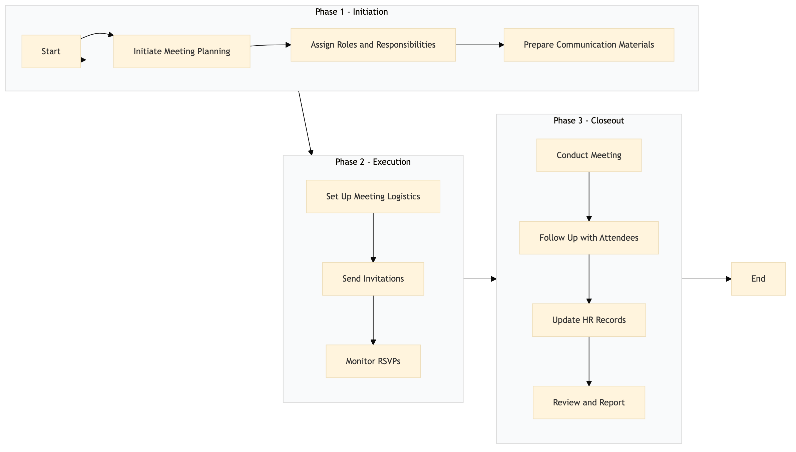

| Role | Steps |
|---|---|
| HR Manager | 1.1 1.2 1.3 3.1 3.2 3.3 3.4 |
| Event Coordinator | 2.1 2.2 2.3 |
| Step | Name | Role | System | Input | Output | KPI | Dec? | Exc? | Pain Point / Risk |
|---|---|---|---|---|---|---|---|---|---|
| 1.1 | Initiate Meeting Planning | HR Manager | Oracle OPERA Cloud | Meeting agenda and objectives | Meeting plan document | Less than 24 hours to complete the initial plan | N | Y | Lack of clear communication goals |
| 1.2 | Assign Roles and Responsibilities | HR Manager | Workday HCM | Meeting plan document | Role assignment list | Less than 48 hours to complete assignments | N | Y | Overlapping responsibilities |
| 1.3 | Prepare Communication Materials | HR Manager | Oracle OPERA Cloud, Microsoft Power BI | Meeting plan document, role assignment list | Communication materials (slides, handouts) | Less than 72 hours to complete materials | N | Y | Technical issues with presentation tools |
| 2.1 | Set Up Meeting Logistics | Event Coordinator | Oracle OPERA Cloud, Book4Time | Meeting plan document | Room reservation and scheduling confirmation | Less than 2 hours to complete setup | N | Y | Conflicting room bookings |
| 2.2 | Send Invitations | Event Coordinator | Oracle OPERA Cloud, Microsoft Power BI | Room reservation and scheduling confirmation | Invitation sent to all attendees | Less than 24 hours to send invitations | N | Y | Email delivery issues |
| 2.3 | Monitor RSVPs | Event Coordinator | Oracle OPERA Cloud, Book4Time | Invitation sent to all attendees | RSVP status report | Less than 2 hours to update RSVPs | N | Y | Low response rates |
| 3.1 | Conduct Meeting | HR Manager, Event Coordinator | Oracle OPERA Cloud, Microsoft Teams | Communication materials, RSVP status report | Meeting minutes and attendee feedback | Less than 2 hours for meeting execution | Y | Y | Technical issues during the meeting |
| 3.2 | Follow Up with Attendees | HR Manager, Event Coordinator | Oracle OPERA Cloud, Microsoft Power BI | Meeting minutes and attendee feedback | Feedback acknowledgment emails sent | Less than 24 hours to send follow-up emails | N | Y | Low response rates |
| 3.3 | Update HR Records | HR Manager | Oracle OPERA Cloud, Workday HCM | Meeting minutes and attendee feedback | Updated employee records | Less than 48 hours to update records | N | Y | Data entry errors |
| 3.4 | Review and Report | HR Manager | Oracle OPERA Cloud, Microsoft Power BI | Updated employee records | Meeting review report | Less than 72 hours to complete the review | N | Y | Inaccurate data reporting |
This process outlines the management of internal communication and town hall meetings at a full-service Marriott hotel using Oracle OPERA Cloud PMS and other key Marriott systems.